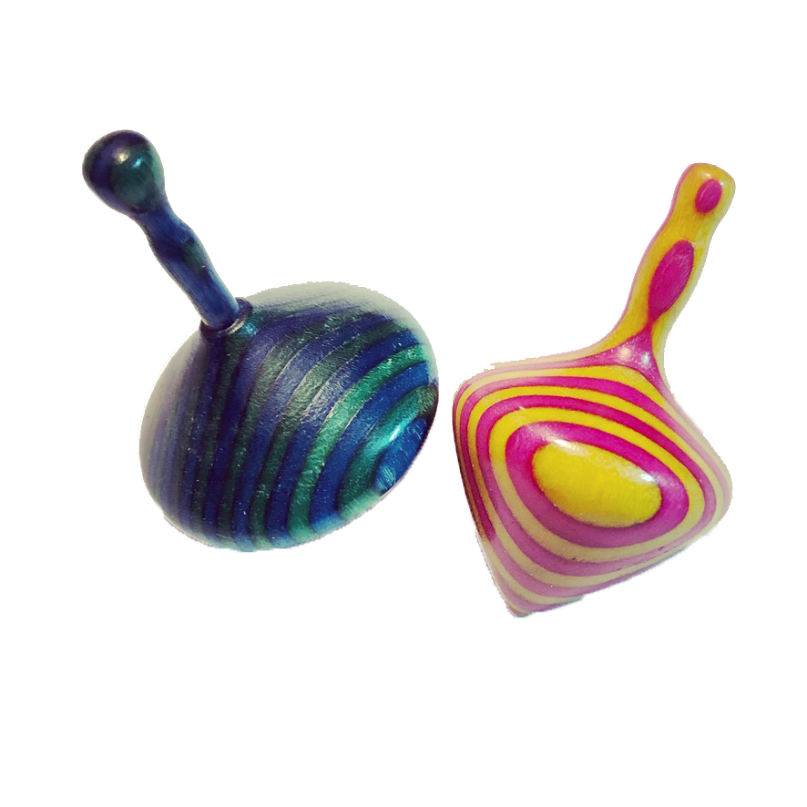
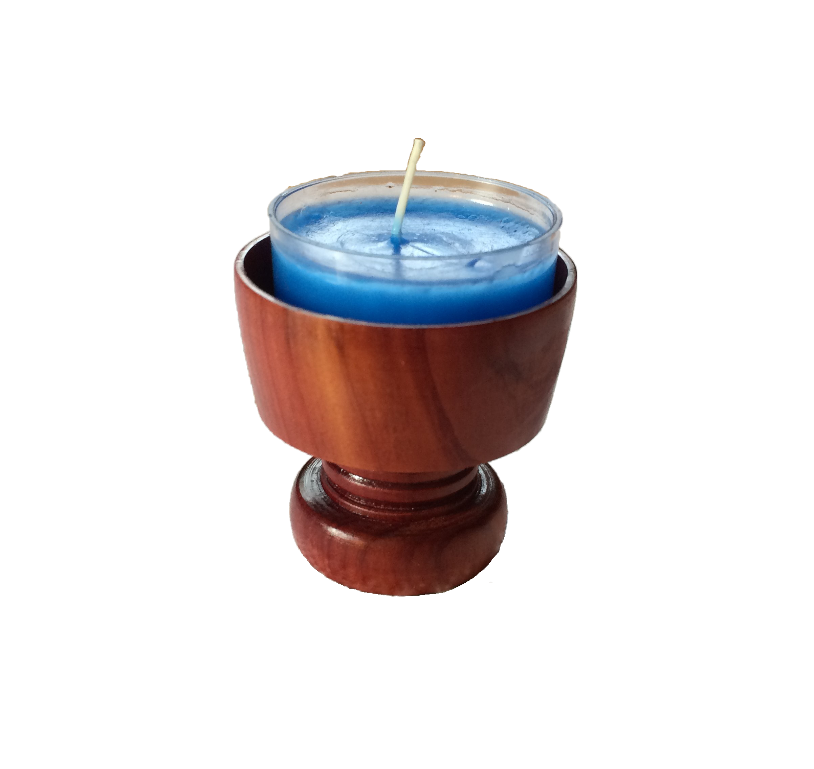
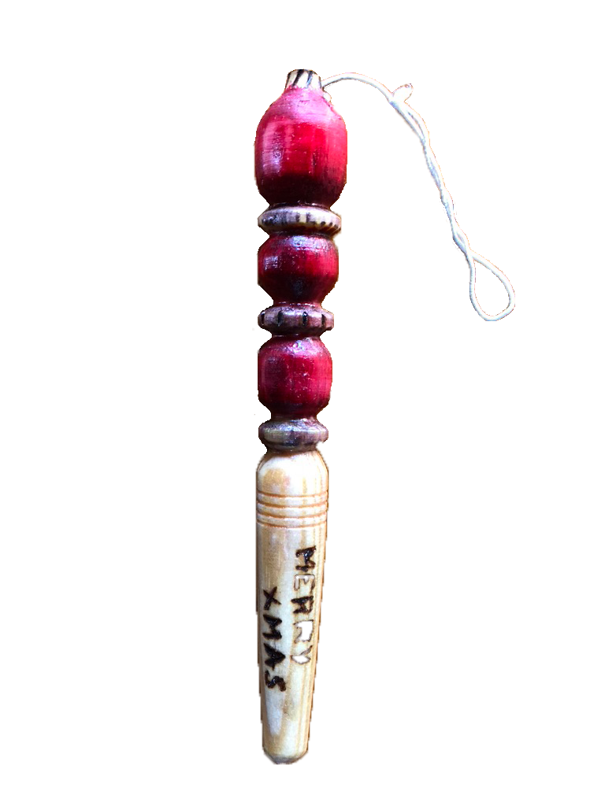

TurnKEY Wood Crafts
is my wood turning gig. Check out my gallery below. Feel free to email me if you're interested in purchasing anything.
TurnKEY Wood Crafts: Herstory
I've always loved skeleton keys. There's something mystical about them. The secrets they unlocked. The intrictate designs.
My first and only key I found was a fairly plain brass key found in the corner of a field. A friend had invited Stef and I out detecting and although it's all I found that day, it made my entire year!
That key is the key I used in the logo, which Stef helped me design and come up with the name.
I fell in love with wood turning after visiting South Africa and getting inspired by my great uncle Jasper's wood turned creations.

Gallery
Snowman stopper

Crochet pen

Tops
Tea Light Holder

Christmas Ornament
